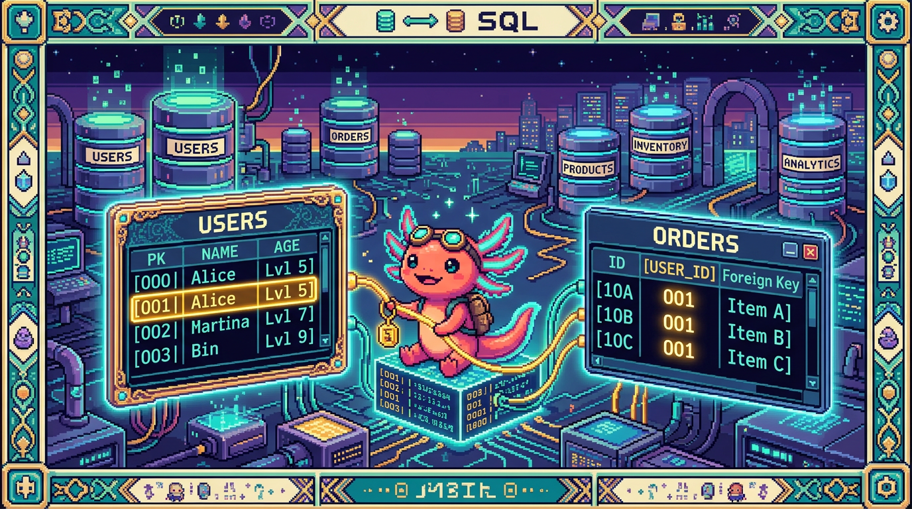

Capitulo 07 — Claves primarias, foráneas y relaciones

¡Hola otra vez! Soy Bit, tu ajolote guía. 🦎 Hasta ahora tus tablas vivían solas, como islas. Pero las cosas reales no están solas: un hábito pertenece a un usuario, un registro de racha pertenece a un hábito, una fase pertenece a un proyecto. En este capítulo aprenderás a conectar tablas sin que se arme un lío: claves primarias, claves foráneas, integridad referencial y los famosos "uno-a-muchos" y "muchos-a-muchos". Cuando termines, vas a entender por qué las tablas reales de RachaSimple y Faro están armadas como están. Respira hondo (yo respiro por las branquias 😄) y vamos.
1. El problema: datos que se repiten y se desordenan
Imagina que guardas tus hábitos en un solo archivo, como hace PolyPaw (que usa archivos JSON en disco, sin base de datos relacional). Cada vez que registras que cumpliste un hábito, copias el nombre del usuario, su correo, el nombre del hábito... una y otra vez. Si el usuario cambia su correo, tendrías que corregirlo en cientos de lugares. Y si te equivocas en uno, ya quedó inconsistente.
Las bases de datos relacionales (como Postgres, que usan RachaSimple y Faro a través de Supabase) resuelven esto separando la información en tablas y enlazándolas en vez de copiarla. Para enlazar tablas necesitamos dos herramientas: una forma de identificar cada fila sin confusión (clave primaria) y una forma de apuntar desde una tabla a otra (clave foránea).
🟦 ¿Que significa? — Base de datos relacional
Es un tipo de base de datos que guarda la información en tablas (filas y columnas) y permite relacionar unas tablas con otras mediante claves. "Relacional" viene justo de esas relaciones entre tablas. Para que sirve: evitar repetir datos y mantener la información consistente. Donde se usa: RachaSimple y Faro usan Postgres (vía Supabase), que es relacional. En cambio PolyPaw guarda todo en archivos JSON: no es relacional, y por eso para relacionar cosas hay que hacerlo "a mano" en el código.
🟦 ¿Que significa? — Postgres (PostgreSQL)
Es un motor de base de datos relacional muy popular, libre y robusto. Es el programa que guarda tus tablas, hace cumplir las reglas (como la integridad referencial) y responde a tus consultas SQL. Para que sirve: almacenar y consultar datos relacionados de forma segura y consistente, incluso con muchos usuarios a la vez. Donde se usa: RachaSimple y Faro guardan toda su información en Postgres. PolyPaw, en cambio, no usa Postgres: guarda sus datos en archivos JSON en disco.
🟦 ¿Que significa? — Supabase
Es una plataforma que te da un Postgres ya listo en la nube, más herramientas alrededor: autenticación de usuarios (Supabase Auth), un cliente para consultar desde tu código y seguridad por fila (RLS). Piensa en ella como "Postgres con pilas incluidas". Para que sirve: montar el backend de una app (base de datos + login + permisos) sin tener que administrar un servidor a mano. Donde se usa: RachaSimple y Faro usan Supabase tanto para su base Postgres como para el login de los usuarios.
2. La clave primaria: el documento de identidad de cada fila
Cada fila de una tabla necesita algo que la distinga de todas las demás, aunque dos filas se parezcan mucho. Eso es la clave primaria.
🟦 ¿Que significa? — Clave primaria (primary key)
Es una columna (o conjunto de columnas) cuyo valor identifica de forma única a cada fila de la tabla. No puede repetirse y no puede estar vacío (NULL). Para que sirve: señalar "esta fila exacta y ninguna otra". Es la base para que otras tablas puedan apuntar a ella. Donde se usa: en RachaSimple, la tabla
habitostiene una columnaidque es la clave primaria de cada hábito. En Faro, la tablaproyectostiene su propiaid.
En Postgres lo más común hoy es usar un UUID como clave primaria.
🟦 ¿Que significa? — UUID
Es un identificador larguísimo y aleatorio, algo como
a1b2c3d4-...-9f8e. UUID significa "identificador único universal". La probabilidad de que dos sean iguales es prácticamente nula. Para que sirve: dar un id único sin tener que ir contando (1, 2, 3...) ni preocuparte por adivinarlo. Donde se usa: Supabase, por defecto, usa UUID para losidde las tablas de RachaSimple y Faro, y también para identificar a cada usuario enauth.users.
Así se ve una tabla con clave primaria en SQL (ejemplo basado en habitos de RachaSimple):
create table habitos (
id uuid primary key default gen_random_uuid(),
nombre text not null,
color text,
creado_en timestamptz default now()
);
La parte primary key declara que id es la clave primaria. Y default gen_random_uuid() significa "si no me das un id, genero un UUID nuevo automáticamente".
💡 Tip
Casi siempre conviene una clave primaria que no tenga significado de negocio (como un UUID o un número), en vez de usar el correo o el nombre. ¿Por qué? Porque los datos de negocio cambian (alguien cambia de correo), y no quieres que cambiar un correo te obligue a actualizar la identidad de la fila en toda la base.
⚠️ Cuidado
"Único" y "obligatorio" no son lo mismo. La clave primaria es ambas cosas a la vez: única (no se repite) y no nula (siempre tiene valor). Si solo quieres que algo no se repita pero sí pueda faltar, eso es otra restricción (
unique), no una clave primaria.
3. La clave foránea: apuntar a otra tabla
Ya tenemos hábitos con su id. Ahora queremos decir "este hábito pertenece a este usuario". Para eso guardamos en la tabla habitos una columna que contenga el id del usuario dueño. Esa columna que apunta a otra tabla es una clave foránea.
🟦 ¿Que significa? — Clave foránea (foreign key)
Es una columna que guarda el valor de la clave primaria de otra tabla, creando un enlace entre ambas. "Foránea" porque su valor viene de afuera, de otra tabla. Para que sirve: conectar una fila con la fila a la que pertenece en otra tabla, sin copiar todos sus datos. Donde se usa: en RachaSimple,
habitostiene una columnauser_idque apunta al usuario dueño. En Faro, la tablafasestieneproyecto_idque apunta al proyecto al que pertenece la fase.
Veamos habitos ahora con su clave foránea hacia el usuario:
create table habitos (
id uuid primary key default gen_random_uuid(),
user_id uuid not null references auth.users (id),
nombre text not null,
color text,
creado_en timestamptz default now()
);
La línea clave es user_id uuid not null references auth.users (id). La palabra references declara la clave foránea: "el valor de user_id tiene que existir como id en la tabla auth.users". Así, cada hábito queda amarrado a un usuario real.
🔎 En tu codigo
En RachaSimple usas Supabase Auth. Cuando alguien inicia sesión, Supabase crea (o ya tiene) una fila en
auth.userscon unid(UUID). Ese mismo UUID es el que guardas enhabitos.user_id. Por eso cada hábito "sabe" de quién es: comparte eliddel usuario.🟦 ¿Que significa? — Tabla referenciada y tabla que referencia
La tabla referenciada es la que tiene la clave primaria a la que se apunta (ej.
auth.users). La tabla que referencia es la que tiene la clave foránea (ej.habitos). Para que sirve: entender la dirección del enlace: la clave foránea siempre vive en la tabla "hija" y apunta hacia la "padre". Donde se usa: en Faro,fases(hija) referencia aproyectos(padre) conproyecto_id.
4. Integridad referencial: la base no te deja mentir
Aquí está la magia. Una vez que declaras una clave foránea, Postgres vigila que el enlace siempre tenga sentido. Eso se llama integridad referencial.
🟦 ¿Que significa? — Integridad referencial
Es la garantía de que toda clave foránea apunta a una fila que realmente existe. La base de datos no te deja crear un hábito con un
user_idde un usuario inexistente, ni te deja borrar a un usuario dejando hábitos "huérfanos" apuntando a la nada (a menos que digas qué hacer con ellos). Para que sirve: evitar datos rotos e incoherentes ("este hábito es del usuario X" cuando X ya no existe). Donde se usa: en RachaSimple y Faro la activas con cadareferences. Es Postgres quien hace cumplir la regla por ti.🟦 ¿Que significa? — Fila huérfana
Es una fila cuya clave foránea apunta a algo que ya no existe (por ejemplo, un registro de racha cuyo hábito fue borrado). Para que sirve (evitarla): mantener limpios los datos. La integridad referencial existe justamente para impedir huérfanos. Donde se usa: sin reglas, borrar un hábito en RachaSimple podría dejar registros de racha huérfanos. Con clave foránea bien configurada, eso no pasa.
⚠️ Cuidado
En PolyPaw, como los datos están en JSON sin base relacional, no hay nadie vigilando la integridad. Si en un archivo borras una mascota pero en otro quedan referencias a ella, el programa puede romperse y nadie te avisa hasta que falle. Esa es una gran ventaja de Postgres frente a "datos en archivos": las reglas se cumplen solas.
5. Relaciones uno-a-muchos: el caso más común
La relación más frecuente es "uno-a-muchos": una fila de una tabla se relaciona con muchas filas de otra.
🟦 ¿Que significa? — Relación uno-a-muchos
Es cuando una fila de la tabla A se relaciona con muchas filas de la tabla B, pero cada fila de B pertenece a una sola de A. Para que sirve: modelar "uno tiene varios": un usuario tiene varios hábitos; un hábito tiene varios registros; un proyecto tiene varias fases. Donde se usa: RachaSimple → un usuario tiene muchos hábitos, y un hábito tiene muchos registros de racha. Faro → un usuario tiene muchos proyectos, y un proyecto tiene muchas fases.
La clave foránea siempre se pone del lado "muchos". Veamos la cadena completa de RachaSimple: usuario → hábitos → registros.
-- Un usuario (auth.users) tiene muchos habitos
create table habitos (
id uuid primary key default gen_random_uuid(),
user_id uuid not null references auth.users (id),
nombre text not null
);
-- Un habito tiene muchos registros de racha
create table registros (
id uuid primary key default gen_random_uuid(),
habito_id uuid not null references habitos (id),
fecha date not null,
completado boolean default true
);
Fíjate en la cadena: registros.habito_id apunta a habitos.id, y habitos.user_id apunta a auth.users.id. Así, partiendo de un registro puedes llegar al hábito, y del hábito al usuario. Todo conectado, nada repetido.
🔎 En tu codigo
En Faro pasa lo mismo con otra cadena: usuario → proyectos → fases. ```sql create table proyectos ( id uuid primary key default gen_random_uuid(), user_id uuid not null references auth.users (id), nombre text not null, estado text );
create table fases ( id uuid primary key default gen_random_uuid(), proyecto_id uuid not null references proyectos (id), titulo text not null, completada boolean default false );
``fases.proyecto_idapunta aproyectos.id`. Un proyecto tiene muchas fases; cada fase pertenece a un solo proyecto.💡 Tip
Truco para saber dónde va la clave foránea: pregunta "¿quién pertenece a quién?". El que pertenece lleva la clave foránea. Una fase pertenece a un proyecto, así que
proyecto_idva enfases, no al revés.
6. Leer relaciones desde el cliente de Supabase
En RachaSimple y Faro no escribes SQL a mano cada vez: usas el cliente de Supabase desde tu código TypeScript (y normalmente lo combinas con TanStack Query para manejar la carga de datos). Lo bueno es que el cliente entiende las claves foráneas y puede traer datos relacionados de una vez.
🟦 ¿Que significa? — Cliente de Supabase
Es una librería de JavaScript/TypeScript que te deja consultar tu base de datos Postgres escribiendo métodos en vez de SQL crudo. Por debajo, igual usa las tablas y relaciones que definiste. Para que sirve: leer y escribir datos desde tu app web sin armar las consultas SQL manualmente. Donde se usa: RachaSimple y Faro lo usan en el front (Next.js / React) para hablar con Postgres.
// RachaSimple: traer cada habito junto con sus registros (relacion uno-a-muchos)
const { data, error } = await supabase
.from("habitos")
.select("id, nombre, registros ( fecha, completado )");
Ese registros ( fecha, completado ) dentro del select funciona porque existe la clave foránea registros.habito_id → habitos.id. Supabase detecta la relación y, por cada hábito, anida sus registros. Sin la clave foránea, esto no sería posible.
🟦 ¿Que significa? — TanStack Query
Es una librería de React que se encarga de pedir datos del servidor, guardarlos en caché y refrescarlos cuando hace falta. Le entregas una función que trae datos (por ejemplo la consulta de Supabase de arriba) y ella maneja el resto. Para que sirve: que tu interfaz muestre datos siempre frescos sin que tú escribas a mano toda la lógica de carga, recarga y errores. Donde se usa: RachaSimple la usa para cargar hábitos y registros y mantener la pantalla al día.
7. Relaciones muchos-a-muchos y tablas puente
A veces "uno-a-muchos" no alcanza. Imagina que en Faro quisieras etiquetas (tags) en los proyectos: un proyecto puede tener muchas etiquetas, y una etiqueta puede estar en muchos proyectos. Eso es muchos-a-muchos, y no se puede resolver con una sola clave foránea.
🟦 ¿Que significa? — Relación muchos-a-muchos
Es cuando muchas filas de la tabla A se relacionan con muchas filas de la tabla B, en ambos sentidos. Un proyecto puede tener varias etiquetas; una etiqueta puede pertenecer a varios proyectos. Para que sirve: modelar relaciones cruzadas donde ninguno de los dos lados "es dueño" del otro. Donde se usa (ejemplo): proyectos ↔ etiquetas en Faro, o hábitos ↔ categorías en RachaSimple.
¿Dónde pondrías la clave foránea? Si la pones en proyectos, solo cabe una etiqueta; si la pones en etiquetas, solo cabe un proyecto. La solución es una tabla puente en medio.
🟦 ¿Que significa? — Tabla puente (tabla de unión)
Es una tabla intermedia que existe solo para conectar dos tablas en una relación muchos-a-muchos. Tiene dos claves foráneas: una hacia cada lado. Para que sirve: registrar cada par "este proyecto con esta etiqueta" como una fila. Muchos pares = muchas filas. Donde se usa (ejemplo): una tabla
proyecto_etiquetasque uneproyectosyetiquetasen Faro.
create table etiquetas (
id uuid primary key default gen_random_uuid(),
nombre text not null
);
-- Tabla puente: cada fila es "un proyecto con una etiqueta"
create table proyecto_etiquetas (
proyecto_id uuid not null references proyectos (id),
etiqueta_id uuid not null references etiquetas (id),
primary key (proyecto_id, etiqueta_id)
);
Mira el primary key (proyecto_id, etiqueta_id): aquí la clave primaria está formada por dos columnas juntas. Eso garantiza que el mismo par proyecto+etiqueta no se repita.
🟦 ¿Que significa? — Clave primaria compuesta
Es una clave primaria formada por más de una columna. La combinación de todas debe ser única, aunque cada columna por separado sí pueda repetirse. Para que sirve: identificar filas en tablas puente, donde lo único es la combinación de las dos referencias. Donde se usa: la tabla puente
proyecto_etiquetas: niproyecto_idnietiqueta_idson únicos por sí solos, pero su par sí.💡 Tip
Una tabla puente puede tener columnas extra propias. Por ejemplo, en
proyecto_etiquetaspodrías agregarcreado_enpara saber cuándo se asignó esa etiqueta. La tabla puente no tiene por qué ser "solo dos columnas".
8. ON DELETE CASCADE: ¿qué pasa al borrar?
Volvamos a la integridad referencial. Si borras un hábito en RachaSimple, ¿qué pasa con sus registros de racha, que apuntan a él con habito_id? Postgres no te dejará dejarlos huérfanos. Tienes que decirle qué hacer, y la opción más útil aquí es cascada.
🟦 ¿Que significa? — ON DELETE CASCADE
Es una regla en la clave foránea que dice: "si borran la fila padre, borra también las filas hijas que la referencian". En cascada, como fichas de dominó. Para que sirve: limpiar automáticamente los datos dependientes. Borras un hábito y sus registros se van solos, sin quedar huérfanos. Donde se usa: en RachaSimple,
registros.habito_idconon delete cascade: borrar un hábito elimina sus registros. En Faro,fases.proyecto_idigual: borrar un proyecto elimina sus fases.
create table registros (
id uuid primary key default gen_random_uuid(),
habito_id uuid not null references habitos (id) on delete cascade,
fecha date not null,
completado boolean default true
);
Ahora, borrar un hábito borra en cascada todos sus registros. Lo mismo aplicarías en Faro a fases.proyecto_id ... on delete cascade: si un usuario elimina un proyecto, sus fases desaparecen con él.
🟦 ¿Que significa? — Otras acciones de borrado (RESTRICT, SET NULL)
Además de
cascade, existenon delete restrict("no dejes borrar el padre si tiene hijos") yon delete set null("deja el hijo, pero pon su clave foránea en NULL"). Para que sirve: elegir el comportamiento según el caso. A veces quieres impedir el borrado; a veces conservar el hijo sin dueño. Donde se usa: en RachaSimple y Faro lo más natural escascadepara datos que no tienen sentido sin su padre (registros sin hábito, fases sin proyecto).⚠️ Cuidado
on delete cascadees potente y un poco peligroso: borrar una fila puede borrar miles en cadena, y no hay "deshacer". Úsalo solo cuando de verdad los hijos no tengan sentido sin el padre. Un registro de racha sin su hábito no sirve de nada → cascade tiene sentido. Pero piénsalo dos veces antes de ponerlo en todos lados.🔎 En tu codigo
En RachaSimple, además de estas reglas, cada tabla tiene RLS (seguridad a nivel de fila) para que cada usuario solo vea SUS hábitos y registros. RLS y claves foráneas trabajan juntas: la clave foránea conecta los datos, y RLS controla quién puede verlos. En Faro pasa igual con
proyectos,fasesyuser_connections.🟦 ¿Que significa? — RLS (Row Level Security)
Es una función de Postgres que filtra por fila quién puede leer o modificar qué, según reglas que tú escribes (por ejemplo: "solo si
user_idcoincide con el usuario logueado"). Para que sirve: que un usuario nunca acceda a datos de otro, aunque la consulta no lo filtre explícitamente. Donde se usa: RachaSimple (hábitos, registros, perfiles) y Faro (proyectos, fases, conexiones de usuario) la usan en todas sus tablas con datos privados.
9. Normalización, a grandes rasgos
Todo lo que hicimos —separar usuarios, hábitos y registros en tablas distintas en vez de un solo bloque— tiene un nombre: normalización.
🟦 ¿Que significa? — Normalización
Es el proceso de organizar los datos en varias tablas relacionadas para evitar repetirlos y mantenerlos consistentes. La idea central: cada dato vive en un solo lugar. Para que sirve: que no haya información duplicada que se pueda contradecir. Si el nombre de un hábito vive solo en
habitos, cambiarlo una vez lo cambia para todos sus registros. Donde se usa: RachaSimple y Faro están normalizadas: el correo del usuario vive enauth.users, no copiado en cada hábito o proyecto.
La regla práctica para principiantes: si te encuentras copiando el mismo dato en muchas filas, probablemente ese dato debería estar en su propia tabla, referenciada por clave foránea.
💡 Tip
No te obsesiones con la teoría de "formas normales" todavía. Para empezar, basta con: (1) cada cosa importante tiene su tabla, (2) cada tabla tiene clave primaria, (3) las relaciones se hacen con claves foráneas, no copiando datos. Con eso ya estás haciendo lo esencial bien.
⚠️ Cuidado
Normalizar demasiado tampoco es ideal: partir todo en mil tablas puede complicar las consultas. En PolyPaw, por ejemplo, tener los datos juntos en JSON es perfectamente razonable para su tamaño y su forma de funcionar (archivos locales, sin servidor de base de datos). La normalización brilla cuando tienes muchos datos relacionados y varios usuarios, como en RachaSimple y Faro.
10. Juntando todo: el mapa de RachaSimple y Faro
Pongamos las dos historias lado a lado, porque siguen el mismo patrón:
RachaSimple:
- auth.users (un usuario) → muchos habitos (vía habitos.user_id)
- habitos (un hábito) → muchos registros (vía registros.habito_id, con on delete cascade)
- perfiles: datos extra del usuario, también ligados a auth.users
Faro:
- auth.users (un usuario) → muchos proyectos (vía proyectos.user_id)
- proyectos (un proyecto) → muchas fases (vía fases.proyecto_id, con on delete cascade)
- user_connections: las conexiones OAuth del usuario (GitHub, Drive), ligadas a auth.users y protegidas con RLS
¿Notas el patrón? Usuario → cosa principal → detalles. Una cadena de relaciones uno-a-muchos, cada eslabón conectado con una clave foránea, todo protegido con integridad referencial y RLS. Cuando entiendes este patrón, entiendes el 80% de cómo está armada cualquier app con Supabase.
🔎 En tu codigo
Faro usa OpenAI para generar descripción, estado y roadmap de cada proyecto. Esos resultados se guardan ligados al
proyecto_idcorrespondiente. Sin claves foráneas bien puestas, no sabrías a qué proyecto pertenece cada análisis generado por la IA. Las relaciones no son un lujo académico: sostienen funciones reales del producto.
Y eso es todo por ahora. Tómate un momento, que yo me voy a flotar un rato. 🦎💤 En el próximo capítulo veremos cómo consultar varias tablas a la vez con JOIN, que es justo donde estas relaciones cobran toda su fuerza.
✅ Checklist — ¿ya domino esto?
- [ ] Sé explicar qué es una clave primaria y por qué cada fila necesita una.
- [ ] Entiendo por qué se suele usar UUID como clave primaria en Supabase.
- [ ] Sé qué es una clave foránea y en qué lado de la relación se coloca.
- [ ] Puedo explicar la integridad referencial y qué es una fila huérfana.
- [ ] Distingo una relación uno-a-muchos de una muchos-a-muchos.
- [ ] Entiendo para qué sirve una tabla puente y por qué lleva clave primaria compuesta.
- [ ] Sé qué hace
on delete cascadey cuándo conviene (y cuándo no). - [ ] Puedo explicar, a grandes rasgos, qué es normalizar y por qué evita datos repetidos.
- [ ] Sé trazar la cadena usuario → hábitos → registros (RachaSimple) y usuario → proyectos → fases (Faro).
- [ ] Entiendo por qué PolyPaw (JSON) no tiene integridad referencial automática y Postgres sí.
🧪 Ejercicios
-
En papel. Dibuja tres cajas:
auth.users,habitos,registros. Traza flechas que representen las claves foráneas e indica de qué columna a qué columna va cada una. Marca dónde pondríason delete cascade. -
En papel. Explica con tus palabras, como si se lo contaras a un amigo, por qué guardar el correo del usuario dentro de cada fila de
registrossería una mala idea. Usa la palabra "normalización". -
💻 En el editor SQL de Supabase. Crea una tabla
notascon:id(UUID, clave primaria),habito_id(clave foránea ahabitos, conon delete cascade) ytexto(text). Inserta una fila usando elidde un hábito existente. Luego borra ese hábito y comprueba que la nota desapareció en cascada. -
💻 En el editor SQL de Supabase. Intenta insertar en
registrosuna fila con unhabito_idque NO exista (inventa un UUID). Observa el error que devuelve Postgres y escribe qué concepto de este capítulo lo provocó. -
💻 En el editor SQL (diseño). Escribe el SQL de una tabla puente
proyecto_etiquetaspara Faro, con dos claves foráneas y una clave primaria compuesta. Añade una columna extracreado_encon valor por defectonow(). -
💻 Con el cliente de Supabase (TypeScript). Escribe una consulta
supabase.from("proyectos").select(...)que traiga cada proyecto junto con sus fases anidadas. Explica en un comentario por qué esa consulta funciona (pista: la clave foráneafases.proyecto_id).